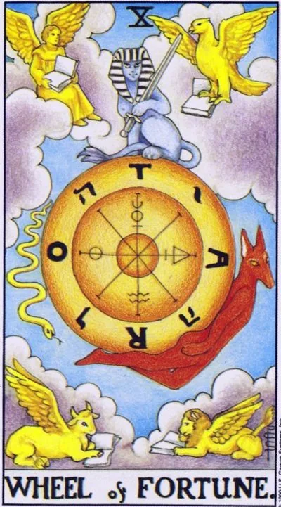

Major Arcana · X
XWheel of Fortune
The wheel turned: fate changes the frame, and luck favors those who managed to grab the rim - ahead of a fateful meeting, a sudden proposal and a turn of circumstances for the better.
Archetype and core meaning
There's a huge wheel in the sky with the letters of the name of God and the word TORA; on the disk itself, there's a sphinx at the top, a serpent Typhon at the bottom, and Hermanubis with a staff rising with the turn. At the corners of the card, there are four cherubim with books: laws remain as long as chance rotates. This is the most eventful lasan of the deck: life takes the next frame.
Jupiterian nature gives a generous twist: change is more often in favor of the one who is ready. A card means a favorable coincidence, a fateful encounter, a sudden offer - something that can not be ordered, but can be earned by readiness. Its wisdom is in discernment: the wheel spins situations, but not you; the center remains yours if you do not give it.
Daily life
A day of surprises: plans change, and it's better to meet it as a plot, not a disaster. Keep the schedule air, unbuilt windows, in which fate will make its way. Accept an unexpected invitation, respond to a random message, buy a ticket if it suddenly becomes cheaper: small turns today add up to a large pattern.
Work and career
In your career, it's a turning point card: a sudden offer, a reorganization, a new market, a chance that won't happen again. Act fast but not fussily -- the wheel lifts those who are already holding onto it, and your willingness is counted as merit. Good career lotteries time: contests, grants, public bids -- the odds of success are higher than usual.
Relationships
In love, the Wheel is fateful: an encounter that happened "accidentally," a return from the past, a sudden turn where everything seemed clear. For singles, it is a sign of increased mobility - fate introduces on the road, at events, through friends of friends, not in the sofa silence. For couples, the card promises a renewal of the cycle: a second honeymoon or honest conversation, after which everything changes.
Health
The card suggests that you should take a regime change in peace: moving, season, new schedule — your body is now easily rebuilt if you don't resist it. A good time to change your health approach: a new doctor or a random course turns out to be accurate. Jupiter warns of excesses — liver, weight and appetite require action, especially during the holiday weeks.
Spiritual meaning
The Kaf Path, the palms, connects Hesed and Netzah: destiny is the grip the universe holds us and we hold on to it. The Sphinx at the top of the wheel is the knowledge that keeps the balance on the spin; Typhon at the bottom is the force of decay, without which a new turn is impossible. In practice, the arcana corresponds to working with rhythms: astrological transits, lunar cycles, start times. Meditation on the Wheel fosters equatitude - the ability to remain the center while both take and fall go along the rim.
The rim has sunk: a streak of bad luck and delays, resistance to inevitable change and bets against the flow; they do not argue with the rhythm of life - they wait for it, accumulating strength for a new turn.
Archetype and core meaning
The inverted wheel is the phase where the rim sags: delays, cancellations, "not in time," events drag along like the tide of an inept swimmer. Often it's resistance to change that still happens: the person holds onto the obsolete -- the position, the relationship, the old version of himself -- and the spin turns into grinding.
The card warns of another: trying to beat fate, from casinos to adventurous schemes. At the bottom of the wheel, it is cold for anyone who has been there by stupidity, not by cycle. The advice of the arcana is simple: distinguish between regularity and chance; do not bet everything on random. The strip will change - the wheel knows no exceptions, and this is his consolation.
Daily life
In everyday life, a day of minor disruptions: meetings that fail, a technique that picks the moment to break, money that goes into the unexpected. Don't take it personally, it's the weather, not the sentence; slow down the stakes and the pace, duplicate the important. Give up gambling decisions -- lottery tickets, spontaneous big purchases, arguments -- humor and a backup plan will help: whoever laughs at the wheel rolls softer than the one who curses every spoke.
Work and career
At work, the card draws a long time: projects freeze, decisions are postponed, efforts are not converted into results, and the temptation to rush anywhere if something happens is great. It is a trap: change pushed through the recession phase costs twice as much. Check if you are holding on to a place that has long stopped growing, the wheel removes those who are stuck in the rim with their teeth.
Relationships
In a relationship, the inverted Wheel is a band where both carry: quarrels in circles, returning to the same topic, "as much as possible" - or an external storm that hits the union: moving without consent, family intervention, circumstances are stronger than plans. For single people, she advises not to draw conclusions about love from an unsuccessful period: now lie the calendar and circumstances, not your chances. It is important for couples not to make decisions at the bottom of the cycle: wait for the rise and assess the relationship soberly.
Health
Bodily period is unstable: exacerbations come "in bad time", treatment stalls, tests jump - do not change dramatically the scheme and doctors because of one bad week. Liver, metabolism and weight are vulnerable: Jupiter excesses in the bad streak beat more noticeable. Careful with self-medication "miracle courses" - excitement in health matters is expensive.
Spiritual meaning
The spiritually inverted Kaf is a hand-wrestling struggle: a person argues with the rhythm in which he lives and calls it freedom. The card points to karmic trampling: the same lessons come with new faces until they are learned, and to superstitious fear of fate, paralyzing will. The practice of these weeks is to distinguish between my decision and the flow; the first is all will; the second is trust without drama.
🌿 In brief
The main idea
The wheel of fortune is not a roulette without rules, it is a mechanism whose laws we do not always understand.
How it manifests
Cyclicality, repetition, regularity, consequences of one’s own actions.
Work and money
Market cycles, reporting, salaries, turnover, profits and expenses.
In a relationship
Fateful changes that a person may not anticipate, but that become clear after the mechanism of a situation is revealed.
The shadow side
Fatalism. You stop looking for reasons and you start explaining things by fate.
Feature of the school
The wheel is connected to Virgo, the sixth house, Mercury and Proserpine, and you first need to gather a lot of information, and then you need to extract some really important patterns from it.
📜 In detail — lecture extracts
Essence of the card
He puts the wheel of Fortune at the bottom of the zodiacal wheel, the 6th house (Virgin), where Mercury and the main planet of the Proserpine house rule; it is a kinship with the Hermit: choosing one and diving deep. The core of the card is "rejection of chance and fatalism": the wheel itself is a "soulless mechanism", supposedly cold and calm, the laws of nature on the material level, behind which the divine craft is simply not visible. Hence his key formula: "it is not a roulette with rules and laws" - we just need to focus on the whole idea of the card: "We don't know all the key from the card."
Upright position
- He understands his four usual elements-sectors: fire - society and desires, land - finance and property, air - actions and self-development, water - emotions and personal life.
- - The general series: the mechanism that has figured out knows for which actions punishment will come and for which good will come; the unsophisticated sees only chance; according to Aristotle, the parallelism of two causal sequences: both the fall of a stone and the path of a passerby are not accidental. Karma is not punishment, but the consequences of actions: “how he worked so hard”, including someone else’s one – you often reap “what was sown before you.” Cyclicality and time: inference is made after repetition – if the fourth time the same thing, “means regularity, not chance”.
- - Society: society as a mechanism of social interactions - dating, connections, trends, fashion, trends. The ideal example is SMM-Virgos: collect information, identify five or six keywords ("Proserpine processed Mercury"), work calmly and without unnecessary emotions; emotions - the element of Pisces opposite (youtubers, intrigues): Virgo and Pisces work in pairs.
- - Work/finance: service and work, service, "work for a piece of bread, all work is not in the calling" - "today you are the king at the top, tomorrow the wheel will lower." Financial cycles: annual and quarterly reports, interest monthly and semi-annual, working capital. It will fall well - profit, bad - expenses. Dollar and bitcoin fall not because "tripped" - these are stock patterns; without concrete knowledge, when to buy and sell, in this meat grinder will not climb, otherwise "pit you down and will "pit you will fall."
- Life and body: through the 6th house: medical facilities, diet, cosmetology, body care, hygiene, household problems, pets. The body is "the spacesuit in which the soul is enclosed"; a healthy spirit lives in the 12th house.
- Emotions/personal life: The card is especially affected by fateful decisions and changes that a person may or may not predict; the smart person understands why it came out: “it can be different and can not be different.”
Negative meaning
The good/bad card scale works: profit or expense, top or bottom of the wheel. Someone who acts according to the law is at the top; someone who counts on chance, "Sooner or later the wheel will roll you down and you will fall off this wheel." His formula of fatalism: people who do not do simple things, blame failure on fate - a girl without a hairstyle wonders that men turn away: "She thinks it's fate." Promise: in the next practice, he will understand "why fools are lucky."
School emphases and distinctive points
- - His astrological binding (he shares the layout of the arcanas in the zodiac with Yuri Khan, arguing only with a craving for beautiful symmetry: a perfectly symmetrical face is "terrible", asymmetry gives a highlight).
- Axis 6-12: the earth and body below, water and spirit above; a pair of houses gives two sensations of karma - calculated causality or "give the universe a chance to reward" (lottery ticket); stand in the middle.
- Mythology: Tihe is a draw by the gods, the creation of Hellenism against unchanging fate; Fortune is a wheel and a horn of abundance, the goddess of the harvest from ferre ("to bear fruit"). Moira: Klotho weaves a thread "of everything that falls into his hands", Lahesis weaves the threads of different people, Atropos cuts (ships of Captain Blood); Scandinavian double - Norns Urd, Verdandi, Skuld at the roots of Yggdrasil (a reference to the previous card of wisdom opens).
- - Slavic row is the only one: spinning is a woman's work, her wheel coincides with the wheel of Fortune, the girls guessed when spinning; the 6th house is "very female", passive land - a woman without rights could wait, "when luck turns her face."
- The Greeks: Quiet acts in the mind, automaton in the material world (the gods speak through the person himself in thoughts); “Chance is when God wants to act incognito.”
- - Symbolism of Waite (who took everything from Eliphas Levi): the letters TARO/TORA - a mixture of worldviews (Tarot, Kabbalah, alchemy, Hermeticism), four figures-evangelist simultaneously fixed signs of the zodiac - Leo, Taurus, Eagle-Scorpion, Angel-Aquarius: "mixed in a pile of horses people" - "you can not say who is right." In medieval engraving, a wanderer with a staff ("he is Odin") breaks the fabric of reality to the music of the higher spheres.
- - Modern images - blockbusters about fate: "Terminator-2" (robot-automaton protects the child; Sarah Connor scratches: "there is no fate except the one we create for ourselves"; run ahead of the wheel so that it does not crush), "Star Wars" IV (drawing a death star in a robot - the transition of information from the subconscious to the consciousness, the case of Mercury), "The butterfly effect" (thereat also good), "The Matrix" (the face of Neo from robots - spiritual against the material mechanism), "Lucy" Besson (a human being a hundred percent world sensation).
- - Techniques: check replays, watch a movie with an IMDb rating above seven for the sake of the philosophical layer ("better than Dom-2"); a brand anecdote about Stirlitz: "Not fate, thought Stirlitz, and sat in a snowdrift" - mushrooms do not grow in winter. Banzkhaf does not quote.
Keywords
- soulless mechanism · causality · cyclicality · lotes · roulette with rules · what you sow, you reap · the sixth house (Virgin, Mercury and Proserpine) · fate and luck · blind fatalism · the lower point of the Zodiac
- ---